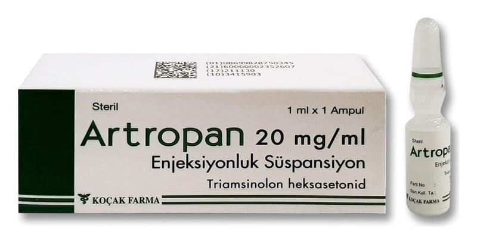

Artropan 20 mg/ml Enjeksiyonluk Süspansiyon, 10 Ampul

Ne için kullanılır
KT · Bölüm 1ARTROPAN, etkin maddesi bir kortikosetroid olan triamsinolon heksasetonid içeren bir ampuldür. Her 1 ml’sinde 20 mg triamsinolon heksasetonid içeren 1 ml’lik ampullerde piyasaya verilmiştir.
Triamsinolon heksasetonid, kortikosteroid (steroid) adı verilen bir ilaç grubuna aittir. Bu kortikosteroidler vücutta doğal olarak bulunur ve sağlığın ve iyiliğin korunmasına yardımcı olur. Vücudunuzu ekstra kortikosteroid (triamsinolon heksasetonid gibi) ile güçlendirmek, vücutta iltihaplanma içeren çeşitli hastalıkları tedavi etmenin etkili bir yoludur. Triamsinolon heksasetonid, bu durumunuzu daha da kötüleştirebilecek olan bu iltihabı azaltır.
Triamsinolon heksasetonid, eklemlerin içine enjekte edilir. Yetişkin ve ergenlere romatoid artrit (iltihaplı eklem romatizması), Juvenil İdiyopatik Artrit (JIA, çocukluk romatizması), osteoartrit (aşınma ve yıpranmanın neden olduğu eklem hastalığı) ve travma sonrası artrit (alınan bir darbe sonucu eklemlerde ortaya çıkan ağrı, şişme ve fonksiyon kaybı), sinovit (eklem çevresindeki dokuların hafif şişmesi), tendinit (bir tendonun iltihabı) ve bursit (omuz, dirsek, bilek, diz, kalça ve ayak bileğinde oluşan iltihapanmalar), epikondilit (tenisçi dirseği olarak bilinen lateral dirsek ağrısı) dahil subakut ve kronik enflamatuar eklem hastalıklarında şişlik, tutukluk ve eklem ağrısı tedavisinde verilir.
Triamsinolon heksasetonid, ayrıca Juvenil İdiopatik Artrit (çocukluk romatizması)’li 3-12 yaş arasındaki çocuklarda intraartiküler (eklem içine enjeksiyon) olarak kullanılabilir.